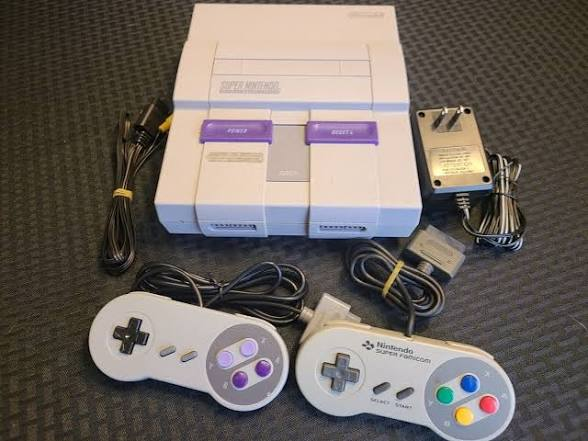
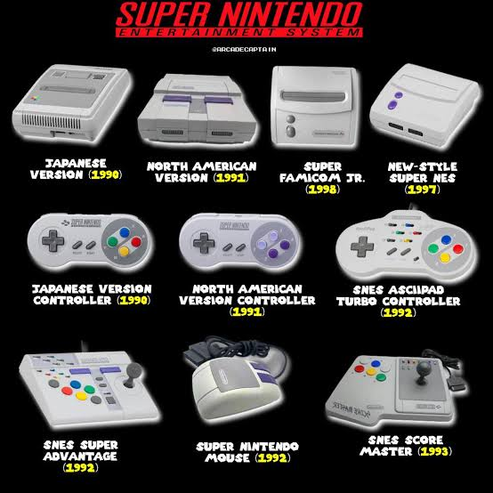

Galeria
NINTENDO Evolution - #2 SNES [SUPER NINTENDO] - Unboxing!!! / Os_Rafas Games
O que fazia o Super Nintendo diferente? | Anatomia do Hardware - Super Nintendo / 8 Bits de Nostalgia
Modelo Popular do Super Nintendo

Outras Versões do Super Nintendo
